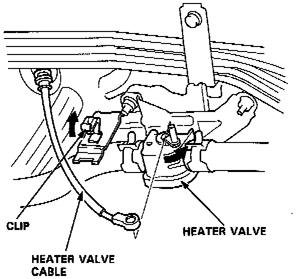
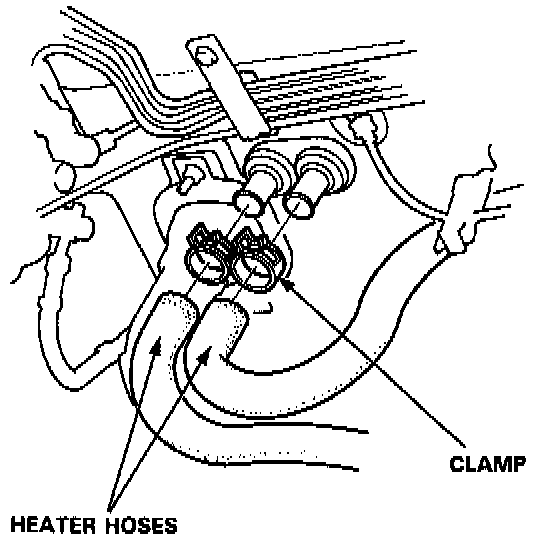
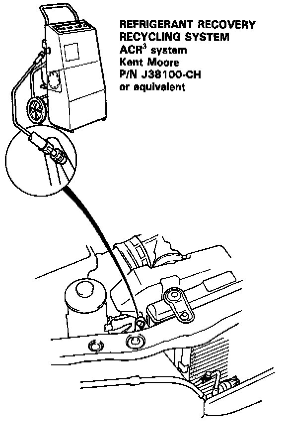
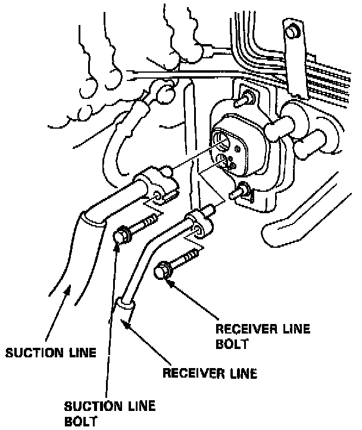
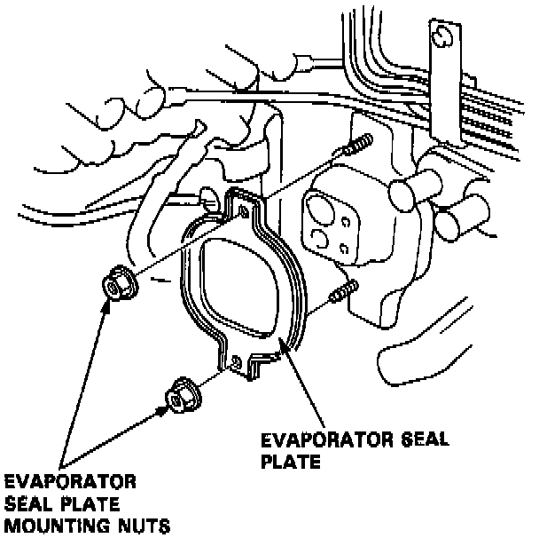
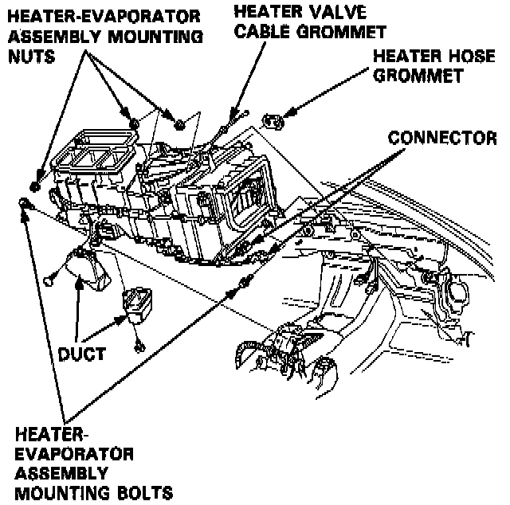
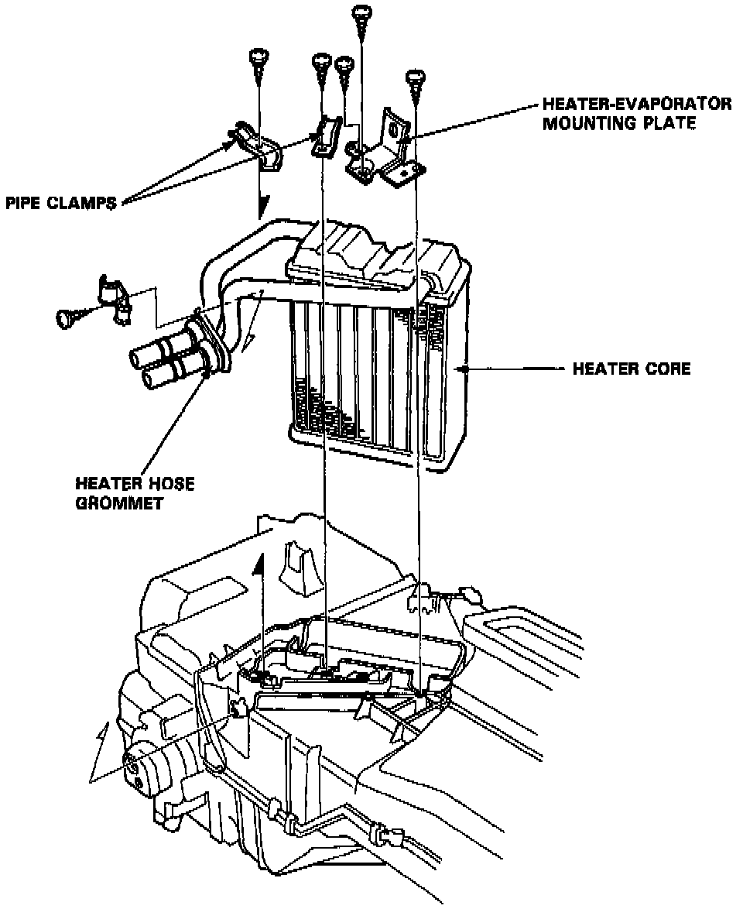
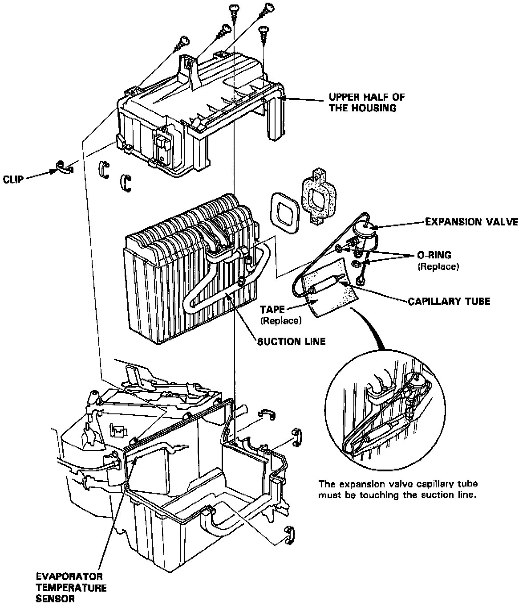

Manual Heating and Air Conditioning
HEATER-EVAPORATOR REMOVALCAUTION: SRS wire harness is routed near the heater.
WARNING: All SRS wire harnesses and connectors are colored yellow. Do not use electrical test equipment on these circuits.
CAUTION: Be careful not to damage the SRS wire harnesses when servicing the heater.
1. Remove the dashboard. Service and Repair
2. Remove the blower. Service and Repair
3. When the engine is cool, drain the coolant from the radiator.
WARNING:
- Do not remove the radiator cap when the engine is hot; the coolant is under pressure and could severely scald you.
- Keep hands away from the radiator fan. The fan may start automatically without warning and run for up to 30 minutes, even after the engine is turned off.
CAUTION: Radiator coolant will damage paint. Quickly rinse any spilled coolant off pained surfaces.
4. Disconnect the heater hoses at the heater. Coolant will run out when the hoses are disconnected, drain it into a clean drip pan.

5. Disconnect the heater valve cable from the heater valve.

6. Release the clamps, then disconnect the heater hoses.

7a Remove all refrigerant from the A/C system with a refrigerant recovery system.

7b. Remove the A/C suction line bolt and the receiver line bolt, then remove the suction line and receiver line.

8. Remove the nuts and evaporator seal plate.

9. Remove the duct and disconnect the connector, then remove the heater-evaporator mounting nuts and bolts.
Disconnect the air-mix control motor connector. Then remove the heater-evaporator assembly.
CAUTION: After reinstalling the heater-evaporator follow the sequence described in the air bleed procedure. If you don't, you may leave air in the system which could damage the engine.
HEATER DISASSEMBLY

Remove the heater core cover, remove the pipe clamps, then lift out the heater core.
EVAPORATOR DISASSEMBLY / REASSEMBLY

1. Remove the upper half of the housing, the remove the evaporator.
2. Remove the expansion valve if necessary.
3. Assemble the heater-evaporator unit in the reverse order of disassembly. Hold the expansion valve capillary tube down against the suction line, and wrap it with tape to hold it there.